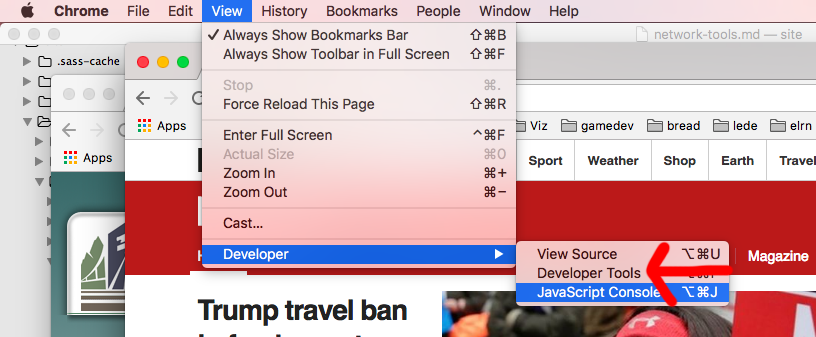
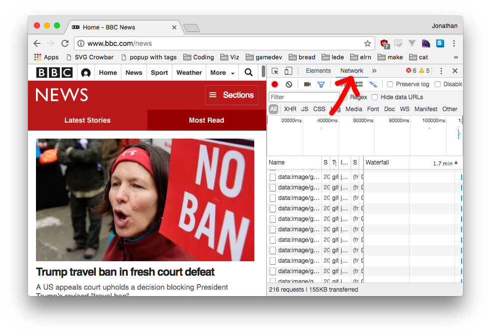
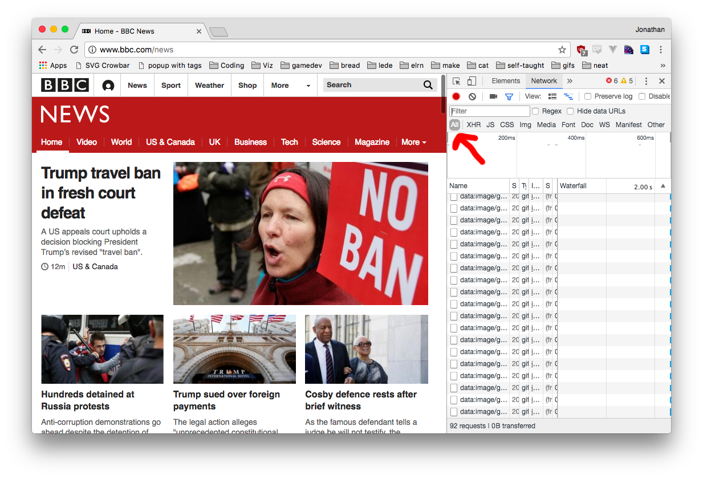
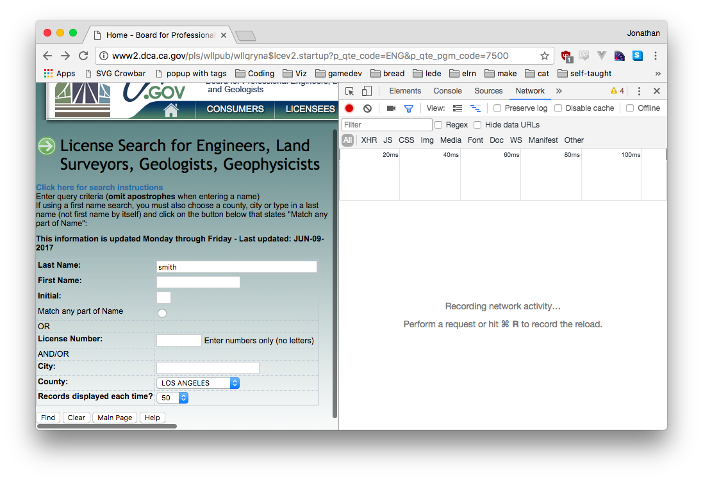
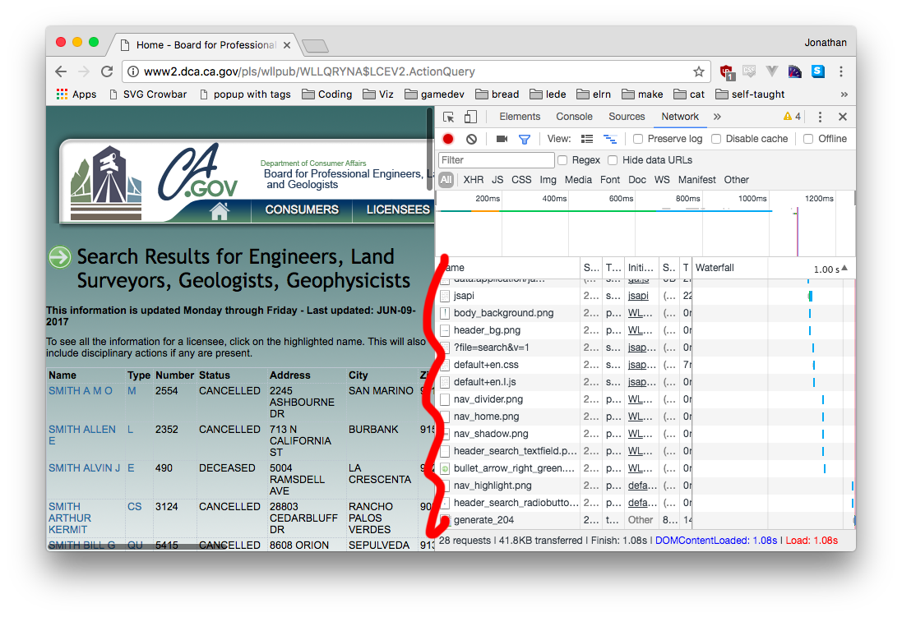
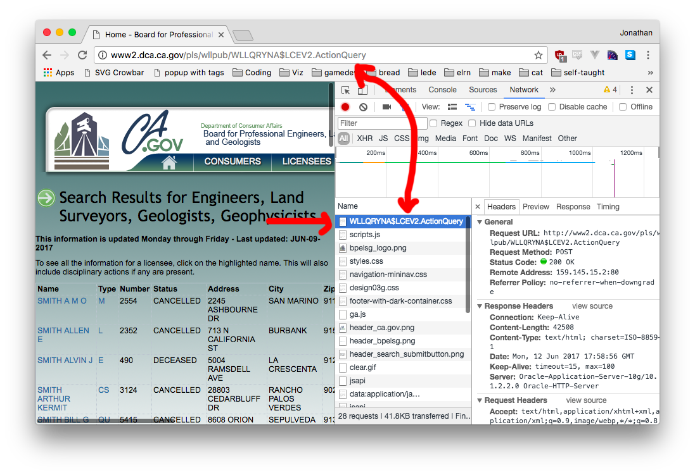
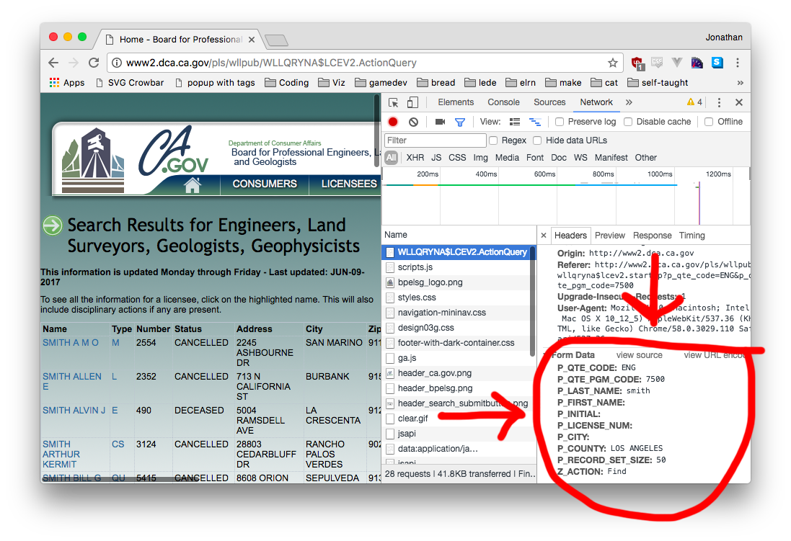
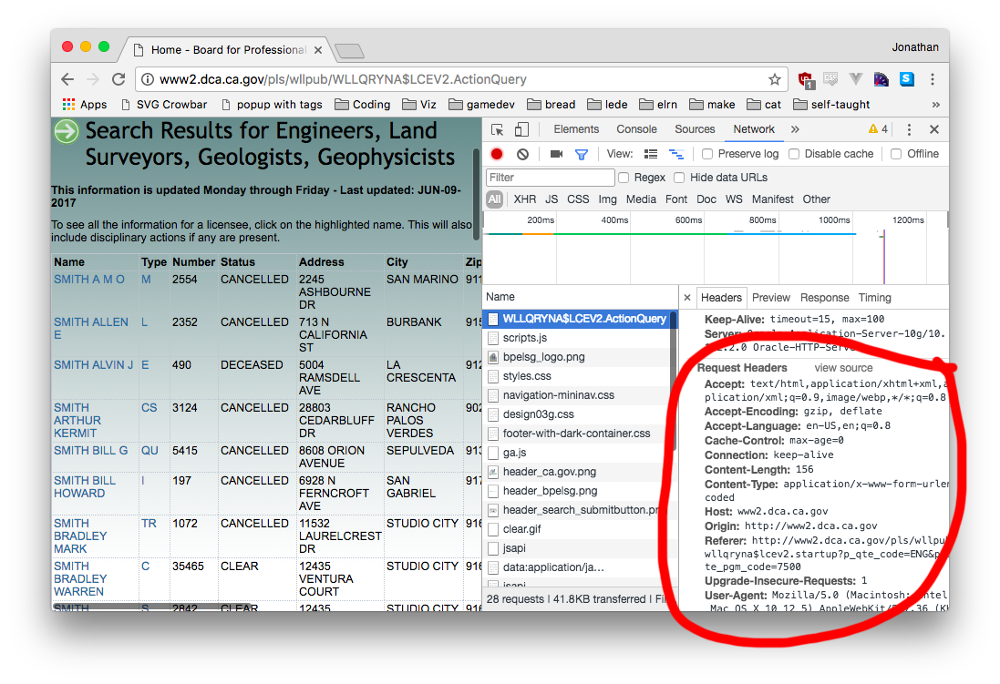
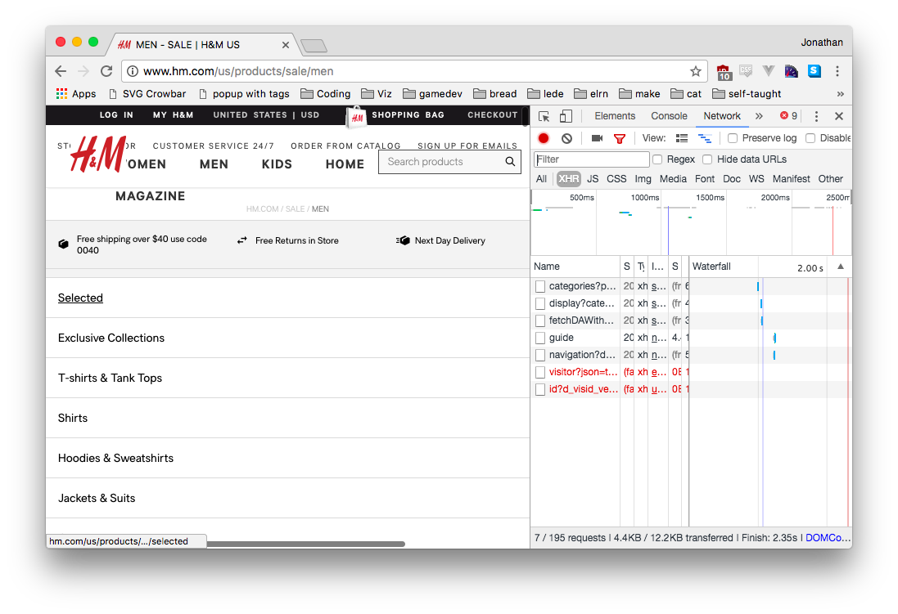
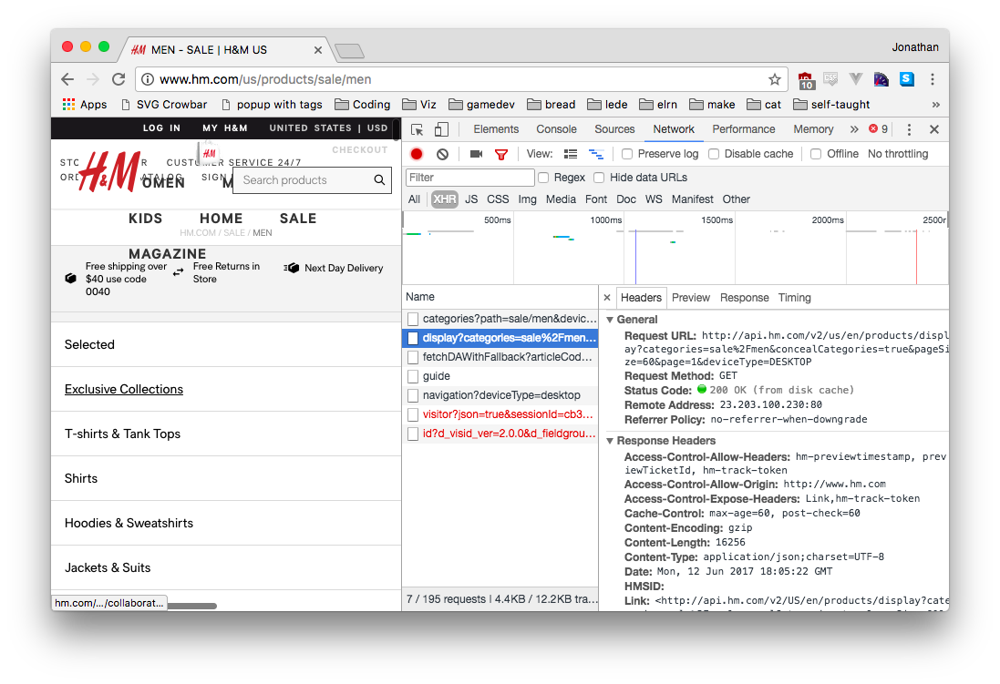

Network Tools
Network Tools is very useful, but not always easy to work with.
Opening and using Network Tools
STEP 1: Open up Developer Tools
Using the top menu select ‘View > Developer > Developer Tools’

STEP 2: Select the Network Tools tab

STEP 3: Make sure the All filter is selected
XHR is useful when you’re looking at API requests from web pages, but for most form stuff All is the best bet.

STEP 4: Click the Clear button, it looks like 🚫
This gets rid of any requests from the current page.

STEP 5: Run your search, watch the Network Tab fill up
Every javascript file, every image, every everything your browser requests - it’s all being logged.

STEP 6: Scroll to the top and select the first file
Its filename should match the URL you’re at - this is the request your browser sent to the server in order to get information.

Form Data in Network Tools
Once you’ve selected your file, scroll to the bottom of the new pane. It should be at the very bottom under Form Data.

You’ll want to send it along as a dictionary with requests.post.
Headers in Network Tools
Once you’ve selected your file, scroll down a bit in the new pane. You’re looking for Request Headers (not Response Headers).

Custom headers work with requests.get and requests.post.
Secret API Requests (Like H&M)
Instead of submitting a form, just load your page and filter for XHR requests. Somewhere in there should be your targets.

Click open the request and examine the URL. You should be able to access it using requests.get.
